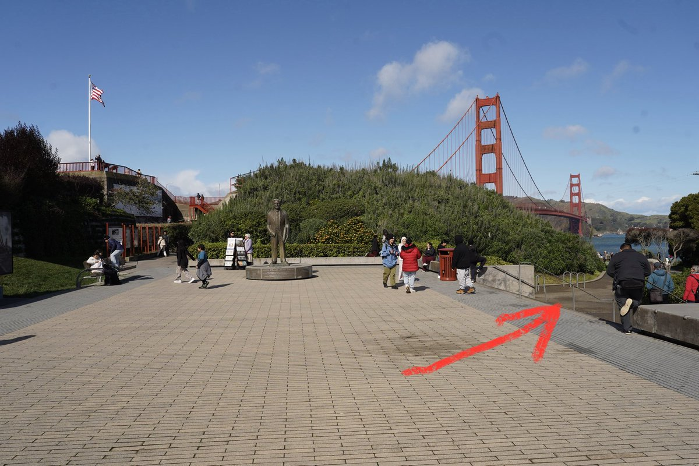

绿色杯子千尋醬喵～🏳️⚧️🍥
@qianxunchan
@ewind_dev OK马上出发！

Yifeng Wang
@ewind_dev
圣地巡礼指南：
1. 导航到金门大桥市区一侧 Welcome Center 的广场，按图一箭头走
2. 摄影师站在图二处，人贴栏杆站好，焦距 50mm（可变焦到约 45mm 以增加容错）
3.注意适当调整相机高度，构图让头部位于两座主塔之间，效果如图
这个路线最简单，但位置还原并不特别精确 https://t.co/FEki2XwtEX https://t.co/lA3gLSrexm